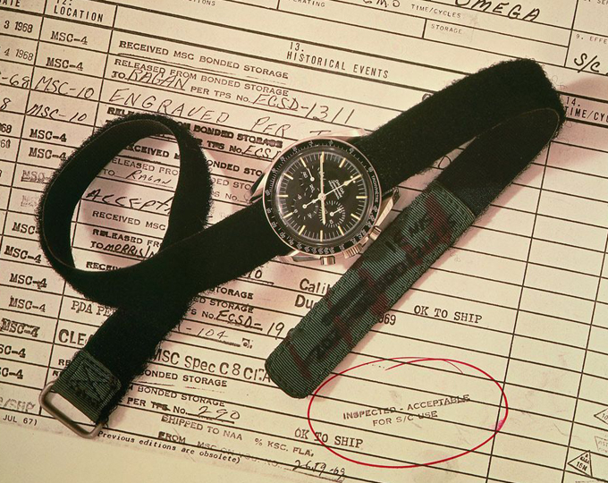

홈 > 브랜드 매거진 > 오메가
오메가
오메가(OMEGA)는 스위스 스와치 그룹 산하의 럭셔리 시계 제조 브랜드이다.
산업 분야 패션·럭셔리 · 공개 등급 편집 검수 · 브랜드 평가 4.7 ★

한눈에 보는 브랜드
오메가(OMEGA)는 1848년 루이 브랜트(Louis Brandt)가 스위스 라쇼드퐁에서 키와인드 회중시계 공방을 열며 출발한 시계 브랜드다. 1894년 두 아들 루이폴과 세자르가 완성한 19리뉴 무브먼트에 붙인 이름 '오메가'가 브랜드명의 기원이 됐고, 1903년 오메가 워치 컴퍼니로 사명을 바꿨다.
현재는 스위스 비엘에 본사를 둔 스와치그룹(Swatch Group) 산하 핵심 브랜드로, 그룹 시계·주얼리 사업의 약 3분의 1을 책임지는 간판으로 꼽힌다.
브랜드 관점
오메가를 읽는 첫 열쇠는 롤렉스와의 차별화다. 2024년 시계 시장에서 롤렉스가 점유율 약 32%로 압도하고 오메가는 약 7% 안팎, 순위는 5위권으로 밀렸지만, 오메가는 '기록 경기의 시계'라는 정체성으로 맞선다.
1932년부터 올림픽 공식 타임키퍼를 맡아 파리 2024가 31번째였고 계약은 브리즈번 2032까지 이어진다. 1969년 아폴로 11호와 함께 달에 도달한 스피드마스터는 NASA 공인 '문워치'로 자리잡았고, 1995년 골든아이부터 제임스 본드의 손목에 씨마스터가 올랐다.
2022년 자매사 스와치와 합작한 바이오세라믹 '문스와치'는 약 260달러로 진입 문턱을 낮춰 신규 고객층을 끌어들인 것이 핵심 함의다. 한국에서도 백화점 정식 유통과 중고 시장 양쪽에서 수요가 탄탄하게 유지된다.
시작과 성장
1848년 라쇼드퐁에서 루이 브랜트는 부품을 모아 키와인드 정밀 회중시계를 조립해, 영국을 거점으로 이탈리아부터 스칸디나비아까지 팔았다. 1877년 두 아들 루이폴(Louis-Paul)과 세자르(César)가 합류하며 사명을 '루이 브랜트 에 피스'로 바꿨고, 생산 거점을 비엘로 옮겨 부품이 호환되는 일관 생산 체계를 세웠다.
1894년 형제는 정밀도와 수리 편의성을 갖춘 19리뉴 칼리버를 내놨는데, 여기에 붙인 이름 '오메가'가 큰 성공을 거두며 1903년 회사명 자체가 오메가 워치 컴퍼니로 바뀌었다. 1969년 아폴로 11호 달 착륙에서 스피드마스터가 NASA 검증 장비로 채택되며 브랜드 위상이 굳어졌고, 이후 스와치그룹 체제에 편입돼 오늘에 이르렀다.
브랜드 아이덴티티
오메가의 가치관은 '정밀함과 개척'으로 압축된다. 우주, 심해, 올림픽 트랙처럼 한계 조건에서 검증된 시계라는 자부가 정체성의 축이다.
브랜드 심볼은 그리스 문자의 마지막 글자 오메가로, '완성'과 정점을 함의한다. 타깃은 헤리티지와 성취 서사에 공감하는 30~50대 전문직과 성취 지향 소비자이며, 롤렉스 대비 상대적으로 접근 가능한 가격대로 '입문 럭셔리' 수요를 겨냥한다.
보이스는 과장보다 사실과 기록에 기댄 절제된 자신감으로, 문워치·올림픽·본드라는 검증된 이야기를 거듭 들려주며 신뢰를 쌓는다.
제품과 서비스
대표 라인은 1957년 시작된 크로노그래프 스피드마스터, 다이버 워치 씨마스터, 정장용 콘스텔레이션, 클래식 드빌로 나뉜다. 한국 정식 유통가 기준 씨마스터는 약 1천만 원대, 스피드마스터 문워치 프로페셔널은 약 1,100만 원대에 형성돼 있고, 보급형 문스와치는 약 260달러대다.
백화점 부티크와 공식 온라인몰, 정식 리테일러를 통해 유통된다.
현재 상태
모회사는 스위스 비엘에 본사를 둔 스와치그룹이며, 오메가는 그룹 내 매출 비중이 가장 큰 핵심 브랜드다. 오메가 단독 매출은 2024년 기준 약 22억 스위스프랑 수준으로 추정되며(공식 분리 수치는 미공개), 시장 추정 기준 그룹 시계·주얼리 매출의 약 35%를 차지한다.
본사 비엘에는 박물관이 들어선 '시테 뒤 탕'과 2017년 준공된 신생산동이 자리한다.
타임라인
BI/CI 변천사
함께 읽을 브랜드
 패션·럭셔리 · 편집 검수롤렉스
패션·럭셔리 · 편집 검수롤렉스롤렉스(Rolex)는 스위스 제네바에 본사를 둔 럭셔리 시계 제조사이다.
 패션·럭셔리 · 매거진 완성스와치
패션·럭셔리 · 매거진 완성스와치스와치는 시계를 고가의 정밀기기에서 매일 바꿔 착용할 수 있는 패션 언어로 전환했다. 시간을 알려주는 기능보다 색, 그래픽, 컬렉션, 가벼운 가격대가 브랜드 경험의...
 패션·럭셔리 · 편집 검수디젤
패션·럭셔리 · 편집 검수디젤디젤(Diesel)은 1978년 렌조 로소가 이탈리아 브레간체에서 설립한 데님 중심의 컨템포러리 패션 브랜드다. 도발적이고 실험적인 디자인으로 데님 헤리티지를 재해석...
 패션·럭셔리 · 자료 기반몽클레르
패션·럭셔리 · 자료 기반몽클레르몽클레르(Moncler)는 1952년 프랑스에서 설립돼 현재 이탈리아에 본사를 둔 럭셔리 다운재킷 브랜드이다.
 패션·럭셔리 · 매거진 완성코치
패션·럭셔리 · 매거진 완성코치코치는 실용적 가죽 제품을 일상적 럭셔리의 영역으로 끌어올린 브랜드다. 과시적 명품보다 접근 가능한 품질과 라이프스타일 이미지를 통해 오래 쓰는 가방의 감각을 브랜드...
 패션·럭셔리 · 매거진 완성프라다
패션·럭셔리 · 매거진 완성프라다프라다는 아름다움을 익숙한 화려함보다 지적인 긴장감으로 표현하는 브랜드다. 소재와 형태, 절제된 색감은 패션을 단순한 장식이 아니라 관찰과 해석의 대상으로 만든다.
 패션·럭셔리 · 편집 검수조르지오 아르마니
패션·럭셔리 · 편집 검수조르지오 아르마니조르지오 아르마니(Giorgio Armani)는 1975년 밀라노에서 설립된 이탈리아 럭셔리 패션 하우스이다.
 패션·럭셔리 · 자료 기반에르메네질도 제냐
패션·럭셔리 · 자료 기반에르메네질도 제냐제냐(Zegna)는 1910년 이탈리아에서 모직 원단 공장으로 출발한 럭셔리 남성복 브랜드이다.